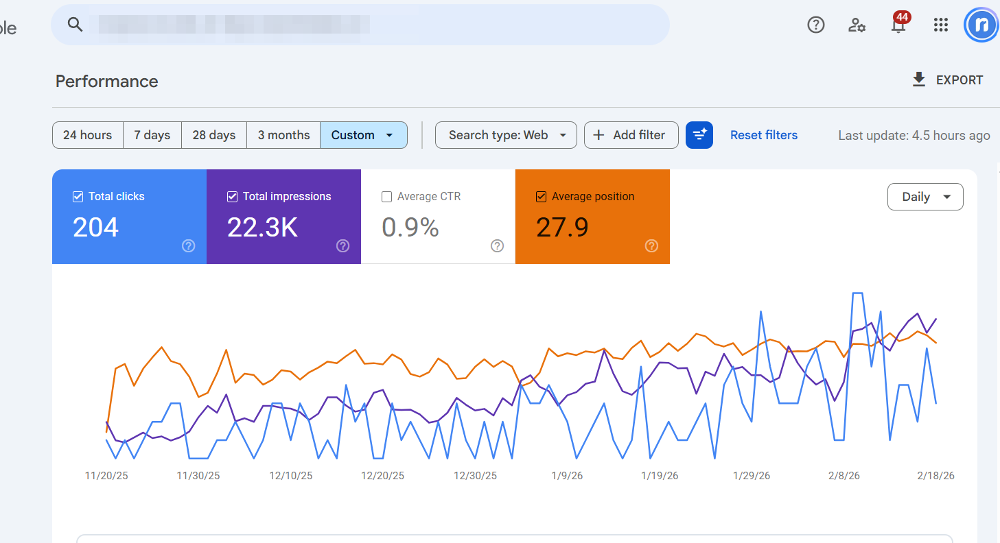
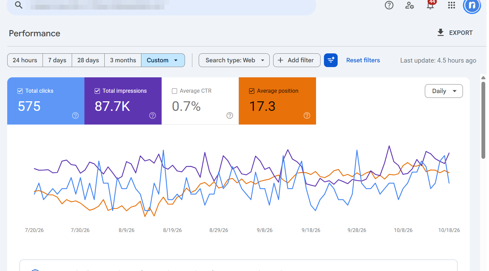

Local SEO case study · Renovation contractor
Bytown Bath, Ottawa: from page 3 to the top 3
Bathroom renovation company. I designed and built the site on WordPress/Elementor Pro and ran the local SEO. Numbers below are from Google Search Console, screenshots unedited.
"bathroom renovations ottawa"
2.7 avg position
Top 3 on Google
"tub to shower conversion ottawa"
3.6 avg position
Top 3 on Google
"bathroom renovation ottawa"
3.75 avg position
Top 3 on Google
Site-wide, same-length periods (Search Console)
| Metric | Nov 20, 2025 – Feb 18, 2026 | Jul 20 – Oct 18, 2026 | Change |
|---|---|---|---|
| Clicks | 204 | 575 | +182% |
| Impressions | 22.3K | 87.7K | +293% |
| Average position | 27.9 | 17.3 | 10.6 higher |


What I did
- Designed and built the site in Elementor Pro: custom templates, mobile-first layouts
- Core Web Vitals work on the page-builder output
- LocalBusiness and Service JSON-LD, NAP consistent with the Google Business Profile
- Service pages targeting "[service] + Ottawa" with click-to-call and quote funnels
- Internal linking from supporting content to the money pages
Sources: Google Search Console keyword export (Aug 24, 2026) for the three positions; Search Console compare view (Oct 2026) for the site-wide table. Full results page with all clients: referrernation-web.github.io/proof/results/ · Case studies: referrernation-web.github.io/proof/